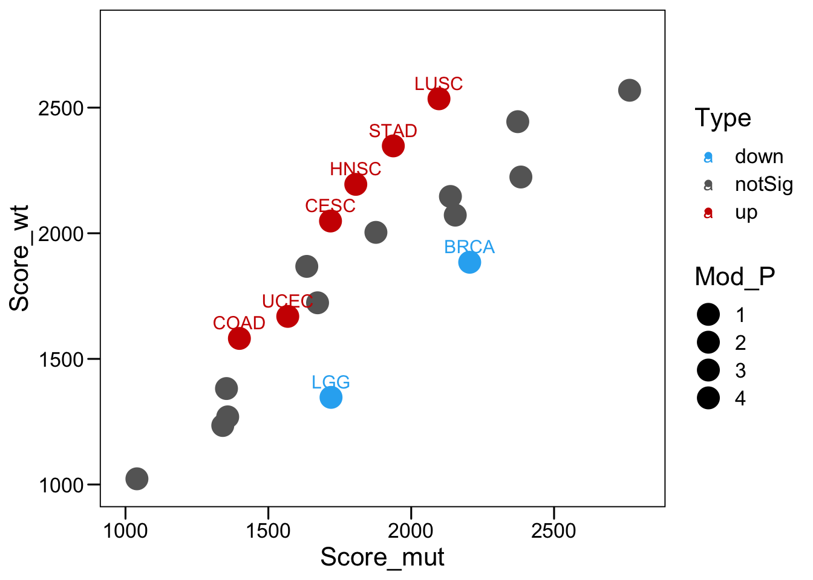
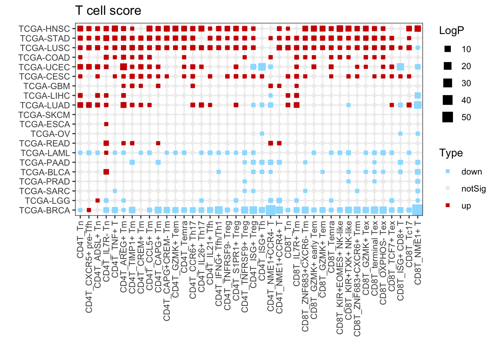

Chapter 3 TCGA
3.1 Download data
The RNA-seq gene expressions, clinical characteristics, and mutation information of TCGA Pan-Cancer Atlas were downloaded from UCSC Xena (https://xenabrowser.net/) via data page (https://xenabrowser.net/datapages/).
3.2 Load packages
suppressMessages({
library(openxlsx)
library(dplyr)
library(DT)
library(DESeq2)
library(estimate)
library(ggplot2)
library(ggthemes)
library(reshape2)
library(pheatmap)
library(stringr)
library(ggpubr)
})
color.lib <- c("#A6761D", "#A6CEE3", "#1F78B4", "#B2DF8A", "#33A02C", "#FB9A99",
"#E31A1C", "#FDBF6F", "#FF7F00", "#CAB2D6", "#6A3D9A", "#F4B3BE",
"#1B9E77", "#D95F02", "#7570B3", "#E7298A", "#66A61E", "#E6AB02",
"#F4A11D", "#8DC8ED", "#4C6CB0", "#8A1C1B", "#CBCC2B", "#EA644C",
"#634795", "#005B1D", "#26418A", "#CB8A93", "#F1E404", "#E22826",
"#50C1FF", "#F4D31D", "#F4A11D", "#82C800", "#8B5900", "#858ED1",
"#FF72E1", "#CB50B2", "#007D9B", "#26418A", "#8B495F", "#FF394B")3.3 Estimate score
######## estimate Score
total.score <- NULL
for (kkk in 1:33) {
message(kkk, " ", TCGA.COHORT[kkk])
sub <- tcga.meta[which(tcga.meta$project_id == TCGA.COHORT[kkk] ), ]
sub.mat <- tcga.fpkm[, sub$sample]
write.table(sub.mat, "output/estimate/Exp.mat.txt", row.names = T, col.names = T, sep = "\t", quote = F)
filterCommonGenes(input.f = "output/estimate/Exp.mat.txt",
output.f="output/estimate/Exp.mat.gct", id="GeneSymbol")
estimateScore("output/estimate/Exp.mat.gct", "output/estimate/estimateScore.gct", platform="affymetrix")
estimate.score <- read.table("output/estimate/estimateScore.gct", sep = "\t", header = T, row.names = 1, check.names = F)
estimate.score <- estimate.score[, -1]
estimate.score <- data.frame(t(estimate.score))
for (i in 2:ncol(estimate.score)) {
estimate.score[, i] <- as.numeric(estimate.score[, i])
}
estimate.score$Sample <- colnames(sub.mat)
write.xlsx(estimate.score, paste0("output/estimate/", TCGA.COHORT[kkk], ".estimate.xlsx"))
}
######## estimate Score
total.score <- NULL
for (kkk in 1:33) {
estimate.score <- read.xlsx(paste0("output/estimate/", TCGA.COHORT[kkk], ".estimate.xlsx"))
estimate.score$ImmuneScoreNor <- estimate.score$ImmuneScore - min(estimate.score$ImmuneScore)
total.score <- rbind(total.score, estimate.score)
}
write.xlsx(total.score, "output/estimate/1.ImmuneScore.xlsx")3.4 Visualization
plot.data <- read.xlsx("output/estimate/1.ImmuneScore.xlsx")
TCGA.ALL <- c("TCGA-OV","TCGA-UCS","TCGA-LUSC","TCGA-ESCA","TCGA-READ","TCGA-HNSC","TCGA-PAAD",
"TCGA-COAD","TCGA-LUAD","TCGA-BLCA","TCGA-STAD","TCGA-LGG","TCGA-UCEC","TCGA-SARC",
"TCGA-BRCA","TCGA-GBM","TCGA-LIHC","TCGA-KICH","TCGA-ACC","TCGA-MESO","TCGA-DLBC",
"TCGA-PRAD","TCGA-CHOL","TCGA-SKCM","TCGA-CESC","TCGA-LAML","TCGA-THYM","TCGA-KIRC",
"TCGA-KIRP","TCGA-TGCT","TCGA-THCA","TCGA-PCPG","TCGA-UVM")
enroll.id <- c("HNSC","STAD","LUSC","COAD","UCEC","CESC","GBM","LIHC","LUAD","SKCM","ESCA","OV","READ","LAML","PAAD","BLCA","PRAD","SARC","LGG","BRCA")
enroll.id <- paste0("TCGA-", enroll.id)
plot.info <- data.frame(Cohort = TCGA.ALL, Diff = 0, P = NA)
plot.info <- plot.info[plot.info$Cohort %in% enroll.id, ]
for (i in 1:nrow(plot.info)) {
sub <- plot.data[which(plot.data$project_id == plot.info$Cohort[i] ), ]
sub.1 <- sub[which(sub$TP53mut == "No"), ]
sub.2 <- sub[which(sub$TP53mut == "Yes"), ]
plot.info$Score_wt[i] <- mean(sub.1$ImmuneScoreNor)
plot.info$Score_mut[i] <- mean(sub.2$ImmuneScoreNor)
plot.info$Diff[i] <- mean(sub.1$ImmuneScoreNor) - mean(sub.2$ImmuneScoreNor)
plot.info$P[i] <- wilcox.test(sub.1$ImmuneScoreNor, sub.2$ImmuneScoreNor )$p.value
}
plot.info$LogP <- -log10(plot.info$P)
plot.info$AbsDiff <- abs(plot.info$Diff)
plot.info <- plot.info[order(plot.info$LogP, decreasing = T), ]
plot.info$Type <- "notSig"
plot.info$Type[which(plot.info$P < 0.05 & plot.info$Diff > 0)] <- "up"
plot.info$Type[which(plot.info$P < 0.05 & plot.info$Diff < 0)] <- "down"
plot.info$Mod_P <- plot.info$LogP
plot.info$Mod_P[which(plot.info$Mod_P > 4)] <- 4
#plot.info$Mod_P[which(plot.info$Mod_P < 1.30)] <- 1.30
plot.info$Sign_P <- plot.info$Mod_P
plot.info$Sign_P[which(plot.info$Diff < 0 )] <- plot.info$Sign_P[which(plot.info$Diff < 0 )] * -1
plot.info$Label <- str_replace_all(plot.info$Cohort, "TCGA-", "")
plot.info$Label[which(plot.info$Type == "notSig")] <- ""
p <- ggscatter(plot.info, x = "Score_mut", y = "Score_wt",
color = "Type",
palette = c(down = "#2bb0f2", up = "#CE0000", notSig = "#666666"),
label = "Label",
size = "Mod_P")
p <- p + theme_base() + scale_x_continuous(limits = c(1000,2800)) + scale_y_continuous(limits = c(1000,2800))
p <- p + scale_size(range = c(6, 6)) + theme(plot.background = element_blank())
p
3.5 T-cell signature
signature.t.cell <- read.xlsx("output/T_signature/T-marker.xlsx")
signature.t.cell$CellTypeAll <- paste0(signature.t.cell$Cell, "_", signature.t.cell$CellType)
score.mat <- NULL
plot.cell <- unique(signature.t.cell$CellTypeAll)
for (i in 1:length(plot.cell)) {
sub <- signature.t.cell[which(signature.t.cell$CellTypeAll == plot.cell[i]), ]
sub.mat <- colMeans(tcga.fpkm[rownames(tcga.fpkm) %in% sub$Gene, ])
score.mat <- cbind(score.mat, sub.mat)
}
colnames(score.mat) <- plot.cell
saveRDS(score.mat, "output/T_signature/t_signature.tcga.mat.rds")3.6 T-cell signature
score.mat <- readRDS("output/T_signature/t_signature.tcga.mat.rds")
tcga.meta <- read.xlsx("output/T_signature/tcga.meta.xlsx")
plot.data <- tcga.meta[which(!is.na(tcga.meta$TP53mut) & tcga.meta$sample_type == "Primary Tumor"), ]
plot.data <- plot.data[ plot.data$project_id %in% enroll.id, ]
plot.info <- NULL
for (kkk in 1:ncol(score.mat)) {
plot.sub <- data.frame(Cohort = enroll.id, Diff = 0, P = NA)
plot.sub <- plot.sub[plot.sub$Cohort %in% enroll.id, ]
plot.data$Score <- score.mat[plot.data$sample, kkk]
for (i in 1:nrow(plot.sub)) {
sub <- plot.data[which(plot.data$project_id == plot.sub$Cohort[i] ), ]
sub.1 <- sub[which(sub$TP53mut == "No"), ]
sub.2 <- sub[which(sub$TP53mut == "Yes"), ]
plot.sub$Diff[i] <- mean(sub.1$Score) - mean(sub.2$Score)
plot.sub$P[i] <- wilcox.test(sub.1$Score, sub.2$Score, alternative = "two.sided")$p.value
}
plot.sub$CellTypeAll <- colnames(score.mat)[kkk]
plot.info <- rbind(plot.info, plot.sub)
}
plot.info$LogP <- -log10(plot.info$P)
plot.info$AbsDiff <- abs(plot.info$Diff)
plot.info$Type <- "notSig"
plot.info$Type[which(plot.info$P < 0.05 & plot.info$Diff > 0)] <- "up"
plot.info$Type[which(plot.info$P < 0.05 & plot.info$Diff < 0)] <- "down"
plot.info$Cohort <- factor(as.character(plot.info$Cohort), levels = rev(enroll.id) )
plot.info$CellTypeAll <- factor(as.character(plot.info$CellTypeAll), levels = colnames(score.mat) )
p <- ggplot(plot.info, aes( x = CellTypeAll, y = Cohort )) +
geom_point( aes(size = LogP, color = Type), shape = 15 )
p <- p + labs(title = paste0("T cell score"), x = "", y = "")
p <- p + scale_color_manual(values = c(down = "#9bdfff", notSig = "#EEEEEE", up = "#CE0000") )
p <- p + theme_bw() + theme(plot.background = element_blank())
p <- p + theme(axis.text.x = element_text(angle = 90,hjust = 1,vjust = 0.5))
p <- p + scale_size(range = c(1, 5))
p